Un fluido newtoniano se encuentra entre dos placas paralelas separadas 3 mm. La placa superior se mueve a $0.8~m/s$. Si el esfuerzo cortante medido es $\tau=200~Pa$, determine la viscosidad dinámica $\mu$.
El perfil de velocidades en un flujo es $u(y) = 4y - y^2$ (con $u$ en $m/s$ e $y$ en $m$). Si $\mu = 0.001~Pa \cdot s$, calcule el esfuerzo cortante a $y=0$ y a $y=2m$.
Un cilindro de radio $R = 50~mm$ y longitud $L = 200~mm$ gira a $n = 1200~rpm$ dentro de un tubo concéntrico con separación radial $\delta = 1~mm$. El fluido tiene $\mu = 0.02~Pa \cdot s$. Calcule el torque $T$ necesario para mantener el giro.
Demuestre que la velocidad del sonido en un gas ideal es $c = \sqrt{kRT}$, donde $k = c_p/c_v$ es la razón de calores específicos.
Considere un flujo de fluido entre dos placas paralelas que están separadas 5 cm, como se muestra en la figura. La distribución de velocidad para el flujo está dada por u(y) = 120(0.05y - y2) m/s donde y está en metros. El fluido es agua a 10 C. Calcule la magnitud del esfuerzo cortante que actúa sobre cada una de las placas.
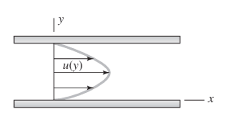
Considere el flujo de un fluido con viscosidad p por un tubo circular. El perfil de velocidad en el tubo se expresa como u(r) = Umáx(1 - r"/R"), en donde umáx es la velocidad máxima de flujo, la cual se tiene en la línea central; r es la distancia radial desde la línea central y u(r) es la velocidad de flujo en cualquier posición r. Desarrolle una relación para la fuerza de arrastre ejercida sobre la pared del tubo por el fluido en la dirección del flujo, por unidad de longitud del tubo.
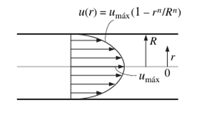
Se mide una presión de vacío de $P_{vac} = 30~kPa$. Calcule la presión absoluta en ese caso asumiendo una presión atmosférica estándar.
Una columna de aceite ($SG = 0.85$) tiene 3.2 m de altura. Calcule la presión en la base en Pa y en mmHg.
En un manómetro en U con aceite ($\rho = 780~kg/m^3$) como fluido manométrico, se lee una diferencia de alturas de $h = 40~cm$. El lado izquierdo está conectado a un recipiente de gas. Calcule la presión manométrica del gas.
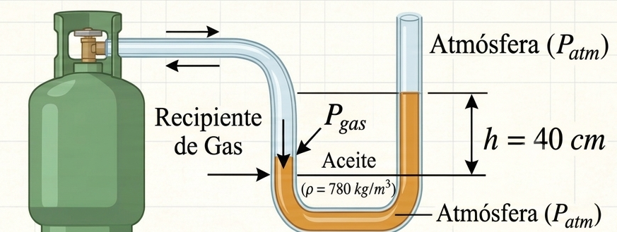
Un barómetro de agua (en vez de mercurio) mide la presión atmosférica. A $20^\circ C$ con $\rho_w = 998~kg/m^3$, ¿qué altura de agua corresponde a $P_{atm} = 101.3~kPa$? Compare con el barómetro de mercurio.
En el sistema manométrico siguiente: un depósito de aceite ($\rho_o = 850~kg/m^3$) está conectado al punto A de una tubería de agua. Hay una columna de aceite de 50 cm y luego mercurio cuya columna diferencial es $\Delta h = 8~cm$. Calcule la diferencia de presiones.
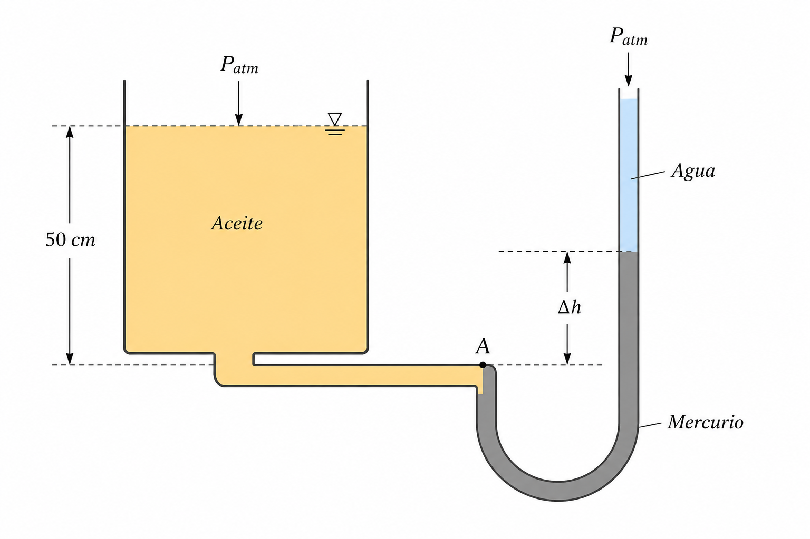
¿Cuál es la presión en el tubo que transporta agua que se ilustra en la figura?
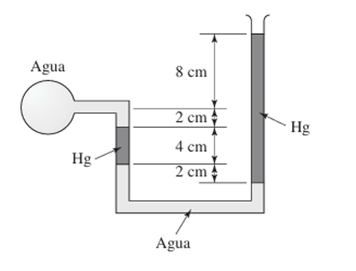
Circulan agua y aceite en unas tuberías horizontales. Un manometro de doble tubo en U está conectado entre las tuberías, como se muestra en la figura. Calcule la diferencia de presión entre el tubo de agua y el de aceite.
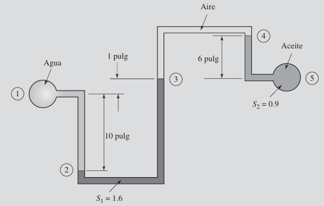
Un estanque de agua tiene 4 m de profundidad. Calcule la presión en el fondo en Pa, kPa, atm y mmHg. Tome $\rho_w = 998~kg/m^3$.
En un depósito con tres capas: mercurio ($h_1 = 0.1~m$), agua ($h_2 = 0.5~m$) y aceite ($SG = 0.82$ , $h_3 = 0.3~m$). La superficie libre está abierta a la atmósfera. Calcule la presión total en el fondo.
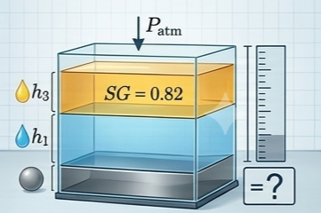
Una prensa hidráulica debe levantar un objeto de 8,000 kg. Calcule las variables de diseño necesarias si la fuerza de entrada es conocida.
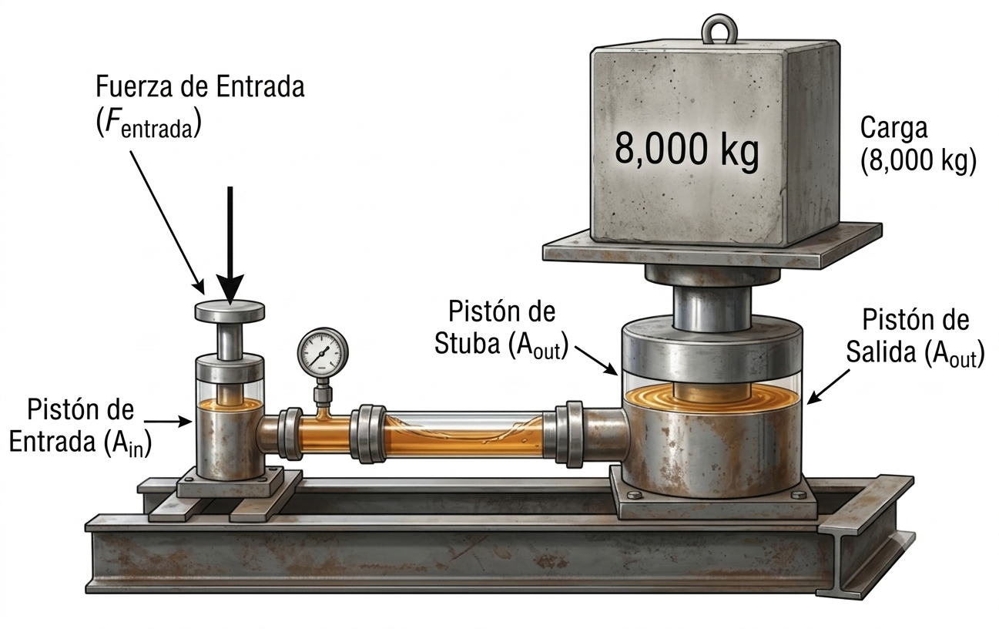
La mitad inferior de un recipiente cilíndrico de 10 m de alto está llena con agua (ρ =1000 kg/m3) y la superior con aceite que tiene una gravedad específica de 0.85. Determine la diferencia de presión entre la superficie superior y el fondo del cilindro.
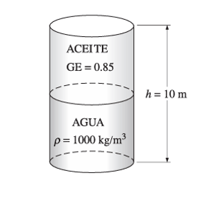
Se puede usar el barómetro básico como un aparato para medir la altitud en los aviones. El control de tierra in forma de una lectura barométrica de 753 mm Hg, en tanto que la lectura del piloto es de 690 mm Hg. Estime la altitud del avión desde el nivel del suelo si la densidad promedio del aire es de 1.20 kg/m3.
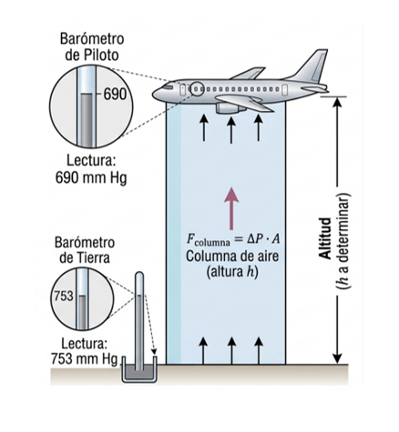
Calcule la fuerza resultante $F_R$ y el centro de presión $h_{cp}$ sobre una superficie vertical sumergida.
Una pared vertical triangular (base $b = 3m$, altura $H = 4m$, vértice hacia arriba) contiene agua hasta la cima ($\overline{h} = 2H/3$). Calcule $F_R$ y $h_{cp}$.
Una compuerta rectangular ($b = 0.8~m$ , $H = 1.2m$) está inclinada $45^\circ$. Su borde superior a 0.4 m de profundidad. Hay una bisagra en el borde superior. Calcule la fuerza $F$ en el borde inferior necesaria para mantener la compuerta cerrada (perpendicular a la compuerta).
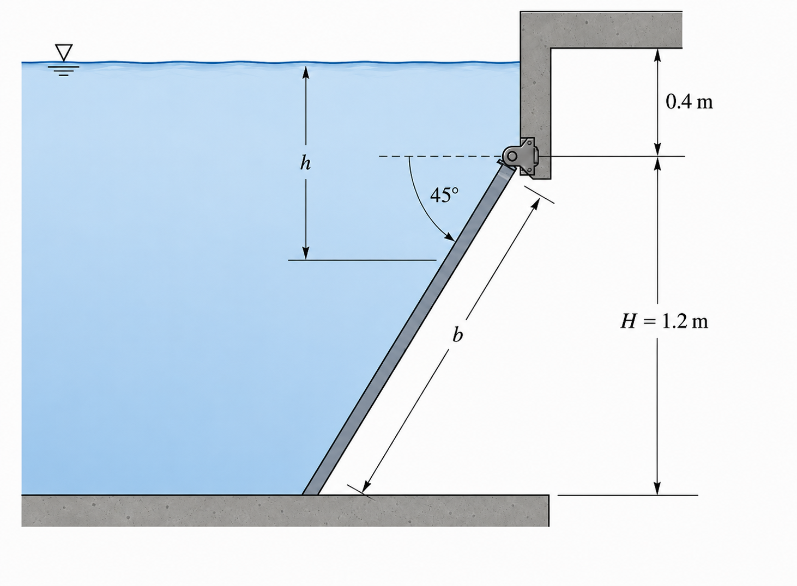
Un tanque de almacenamiento cilíndrico tiene una ventana de inspección rectangular ($0.4~m \times 0.3~m$) en la pared lateral. El centro de la ventana está a 2.5m bajo la superficie libre. Calcule la fuerza sobre los 4 pernos de sujeción si $F_R$ se distribuye equitativamente.
La compuerta rectangular mostrada en la figura es de 3 m de ancho. La fuerza P necesaria para mantener la compuerta en la posición mostrada está más cercana a: (A) 24.5 kN (B) 32.7 kN (C) 98 kN (D) 147 kN
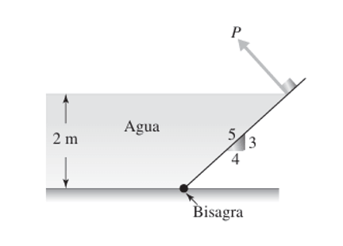
Encuentre la fuerza P necesaria para mantener la compuerta rectangular de 3 m de ancho como se muestra en la figura si: (a) l=2m (b) l=4m (c) l=5m
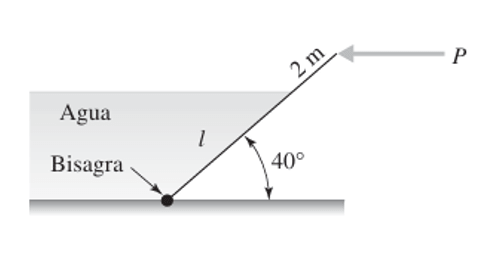
Una esfera hueca ($R = 0.5~m$) está anclada en el fondo de un estanque con agua hasta $H = 3m$. El hemisferio superior tiene la curva mirando hacia el fluido. Calcule $F_H$, $F_V$ y $F_R$ sobre el hemisferio superior.
Una compuerta de cuarto de círculo ($R = 1.5~m$ , $L = 5~m$) tiene su vértice en la base; el lado plano vertical está contra la pared. La superficie libre está a $h_0 = 1~m$ sobre el borde superior del arco. Calcule $F_H$, $F_V$ y $F_R$.
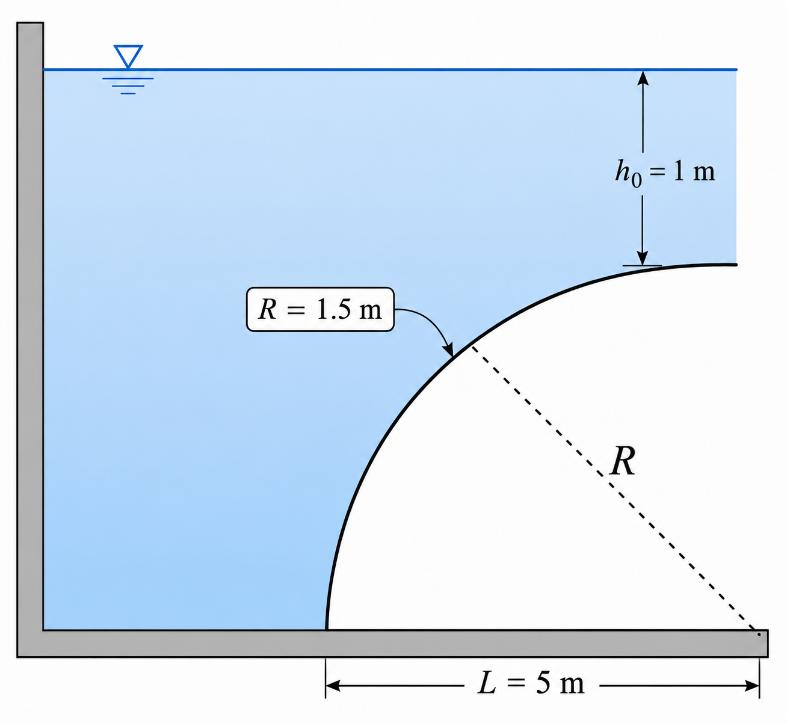
Encuentre la fuerza P necesaria para apenas abrir la compuerta mostrada en la figura si: (a) H = 6 m, R = 2 m, y la compuerta es de 4 m de ancho. (b) H = 20 ft, R = 6 ft, y la compuerta es de 12 ft de ancho
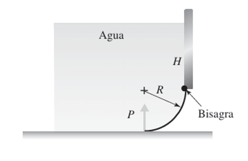
Encuentre la fuerza P si la compuerta parabólica mostrada en la figura mide: (a) 2 m de ancho y H = 2 m (b) 4 ft de ancho y H = 8 ft
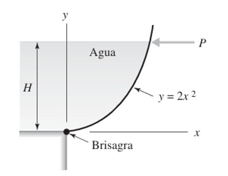
Una esfera hueca de aluminio ($\rho_{Al} = 2,700~kg/m^3$, radio exterior $R_e = 0.2~m$, espesor $e = 0.01m$) flota en agua. ¿Es posible? Calcule la fracción sumergida.
Un pontón cilíndrico ($D = 2m$, $L = 8m$) flota en un estanque. Determine su estabilidad y centro de carena en función del peso específico del fluido.
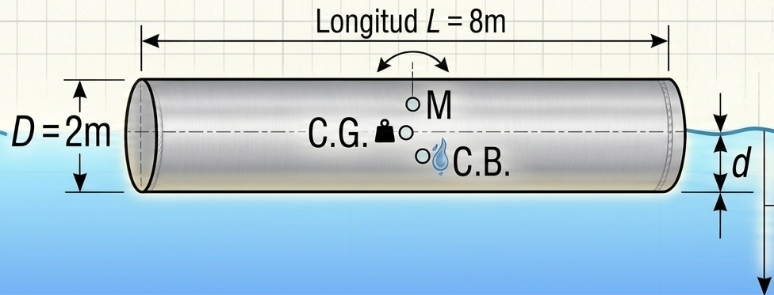
La barcaza de 3 m de ancho que se muestra en la figura pesa 20 kN vacía. Está propuesto que lleve una carga de 250 kN. Prediga el calado en: (a) Agua dulce (b) Agua salada (S = 1.03)
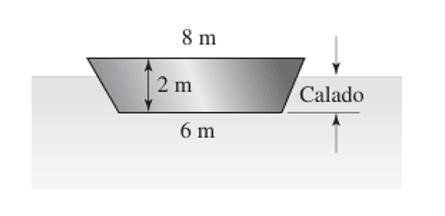
La barcaza que se muestra en la figura se carga en forma tal que su centro de gravedad y la carga están en la línea de flotación. ¿Es estable la barcaza?
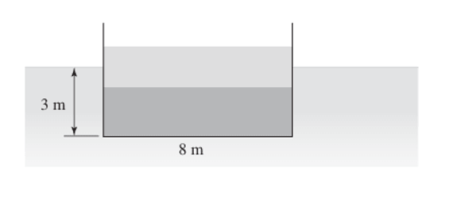
La barcaza que se muestra en la figura, cargada simétricamente, ¿es estable? El centro de gravedad de la barcaza y la carga están localizados como se muestra.
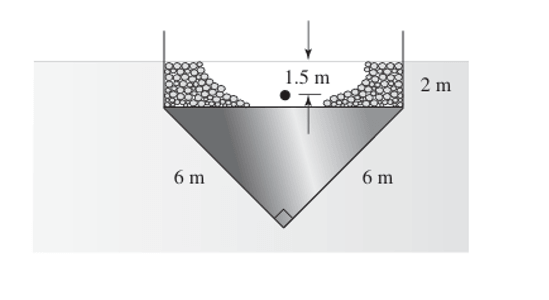
Un recipiente rectangular ($L = 0.8~m$, $h_0 = 0.5~m$) con agua se acelera horizontalmente con $a_x = 5~m/s^2$. Calcule:
(a) el ángulo de la superficie libre.
(b) los niveles en ambos extremos.
(c) si se desborda o queda espacio libre.
Un ascensor desciende con $a_z = -3~m/s^2$ (desaceleración al bajar). El recipiente tiene profundidad $h = 0.3m$. Calcule la presión en el fondo y compárela con el reposo.
Una centrifugadora ($R = 0.1m$, $\omega = 200~rad/s$) contiene aceite ($\rho = 850~kg/m^3$). Calcule:
(a) la diferencia de altura del perfil parabólico.
(b) la presión en el fondo en $r = R$ si el nivel medio es $z_0 = 0.05~m$.
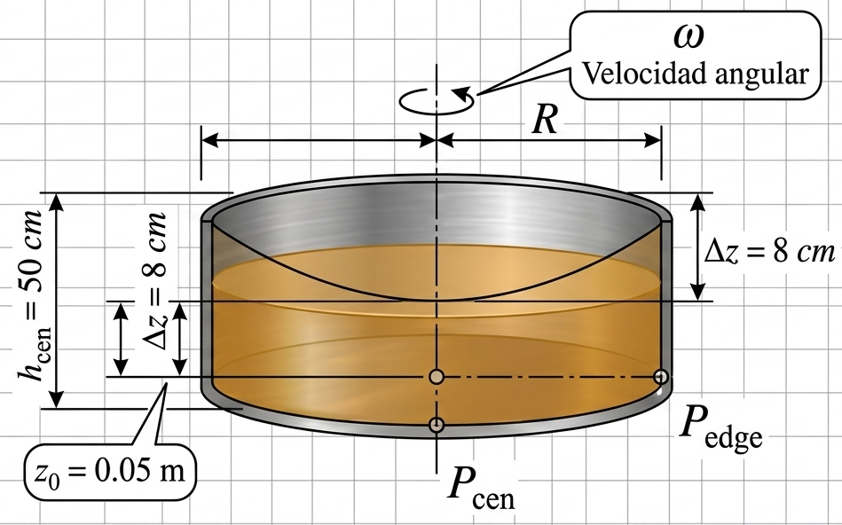
Para el cilindro que se wastra en la figura, determine la presión en el punto A para una velocidad rotacional de: (a) 5 rad/s (b) 7 rad/s (c) 10 rad/s (d) 20 rad/s
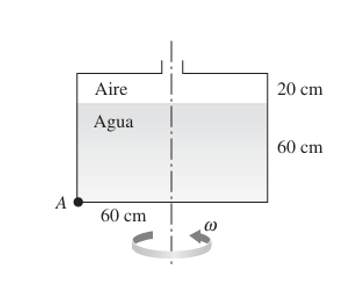
El tanque del problema está lleno de agua y se acelera. Encuentre la presión en A si: (a) a =20 m/s2, L = 1 m (b) a = 10 m/s2, L = 1.5 m (c) a = 60 ft/s2, L = 3 ft (d) a = 30 ft/s2, L = 4 ft
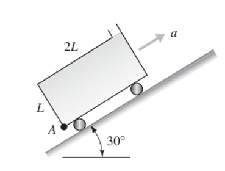
El tanque que se ilustra en la figura se acelera a la derecha a 10 m/s2. Encuentre: (a) PA (b) PB (c) Pc
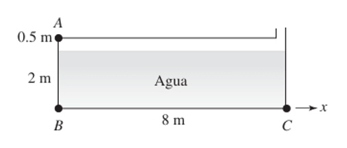